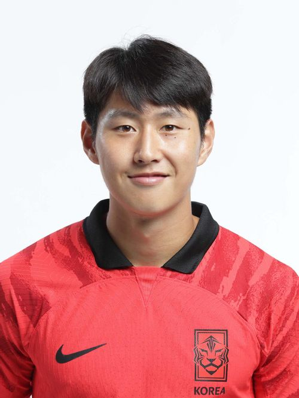
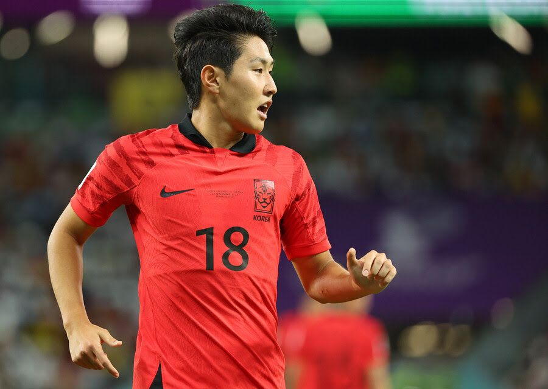
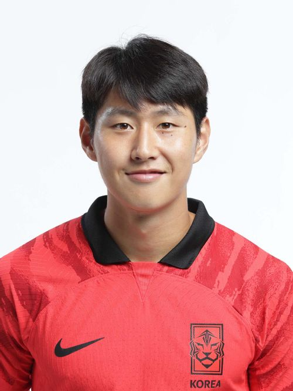
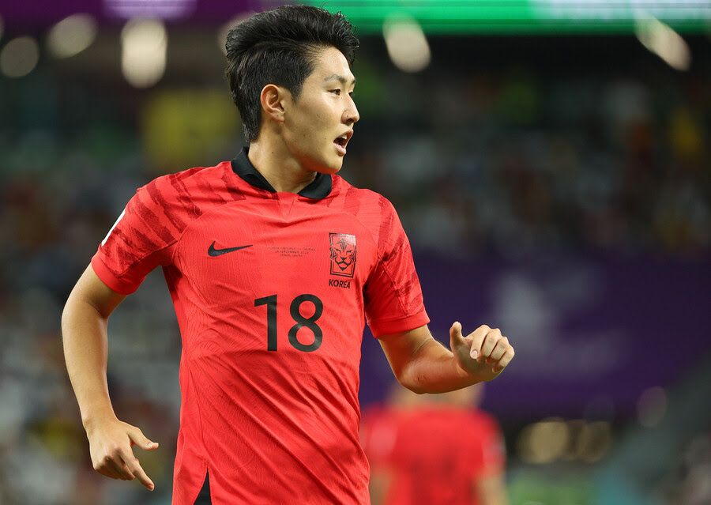

이강인
 
대한민국 국적의 RCD 마요르카 소속 축구선수. 주 포지션은 공격형 미드필더이다.
2019 FIFA U-20 월드컵 폴란드에서 골든볼을 수상했으며,
대한민국 남자 선수 최초로 FIFA 주관 대회 결승전 득점을 기록한 선수기도 하다.
 
대한민국 국적의 RCD 마요르카 소속 축구선수. 주 포지션은 공격형 미드필더이다.
2019 FIFA U-20 월드컵 폴란드에서 골든볼을 수상했으며,
대한민국 남자 선수 최초로 FIFA 주관 대회 결승전 득점을 기록한 선수기도 하다.
Copyright ⓒ MINSU Blog. All rights Reserved.